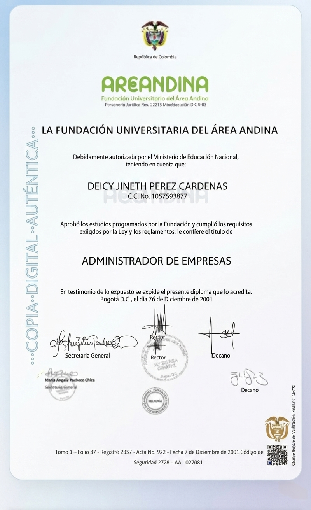

FUNDACIÓN UNIVERSITARIA DEL ÁREA ANDINA
Certifica que:
DEICY JINETH PEREZ CARDENAS
C.C. No. 1057593877
Aprobó los estudios de formación avanzada y cumplió los requisitos exigidos, obteniendo el título de:
PROFESIONAL EN SEGURIDAD Y SALUD EN EL TRABAJO
Dado en Bogotá D.C., el 7 de Diciembre de 2001